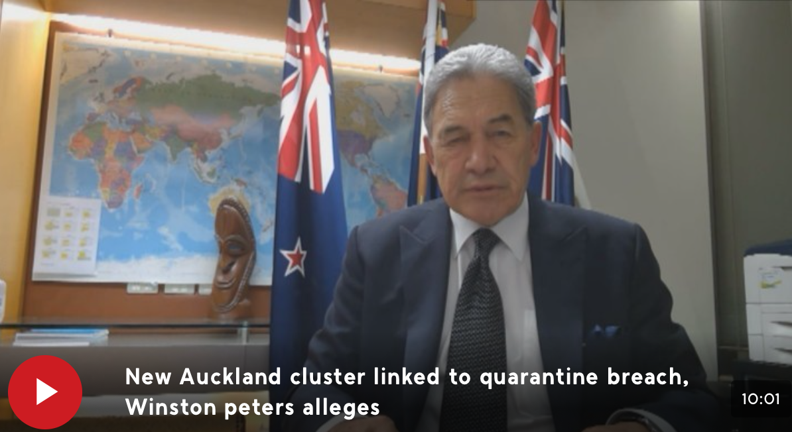

Winston Peters claims current Auckland Covid-19 cluster could be linked to quarantine breach
Deputy Prime Minister Winston Peters has claimed the current Auckland cluster could be linked to a breach in New Zealand's quarantine system.
Four people from one South Auckland family tested positive for Covid-19 on Tuesday, with that cluster growing to 17 today.

Mr Peters said he was given the information by a New Zealand journalist, who he said was "usually very reliable".
"It wasn't an official, I found out from somewhere else, but I think there's been a breach inside our quarantine system," Mr Peters said in an interview with Australian news channel ABC.
He said while "a lot of the conversation and a lot of the narrative is speculation," the country should know "the exact details of what happened".
"I think, when that comes out very shortly, in a matter of maybe less than a day, we'll find out that was the case, but you don't always find out from your officials, you don't always find out from the experts -it's something you sort of find out by contact with other people," he said.
Mr Peters questioned New Zealand's stringent measures to contain the virus at the border after the outbreak.
"We went hard and we went early, but the question is, did we go hard enough and ensure that the policing, that the scrutiny and the quarantine was as tight as it could have been? And we need to know that," he said.
Auckland, where the initial four cases are based, went under Level 3 lockdown at noon yesterday. The rest of the country is currently operating under Level 2 restrictions.
A further 13 people were announced to have tested positive for Covid-19 today.
He said an investigation into the potential breach "should have been done by officials a long time ago. Hours and hours ago."
Mr Peters said they will find out the results of the investigation by around 2pm tomorrow.
Prime Minister Jacinda Ardern's office told 1 NEWS that they did not know what Mr Peters was referring to with the claims.
The Ministry of Health told 1 NEWS in a statement, "Dr Bloomfield was asked about the source of the outbreak at the stand up today and said that was something we were still investigating."